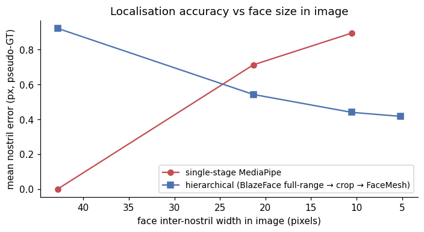
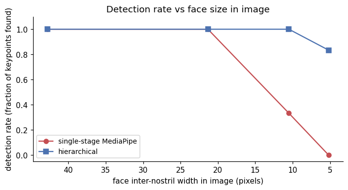
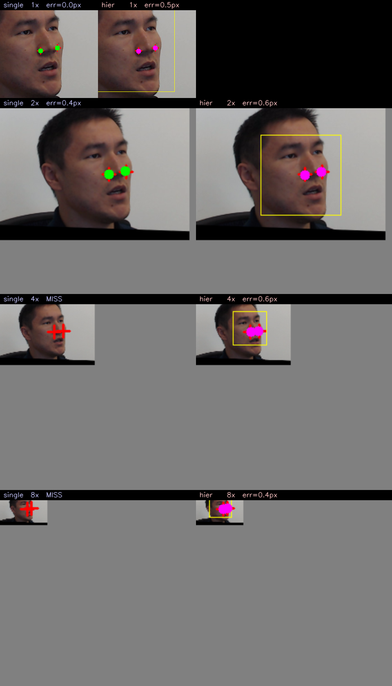

This is part 3 of the thermal nostril series (parts 1, 2, and 4 cover off-the-shelf benchmarking, few-shot finetuning, and the deeper “why is thermal hard” discussion respectively). This part flips the modality to RGB and asks a different question: even when the model is well-suited to the modality, does hierarchical (detect-then-crop-then-keypoint) beat single-stage?
The short answer is yes, and by an enormous margin when faces are small in the frame. The win is exactly the kind that matters in practice: a single-stage MediaPipe FaceMesh on a wide-angle webcam shot (face ~30 px) returns nothing, while a hierarchical pipeline with the right face detector finds the same face and pins the nostrils to within sub-pixel accuracy.
Code:
posts/nostril-hierarchical/scripts/—hierarchical.py,visualize_hier.py,make_progressive_panel.py.
The two pipelines
SINGLE-STAGE HIERARCHICAL
───────────── ──────────────
input image input image
│ │
▼ ▼
MediaPipe FaceMesh BlazeFace full-range
(built-in face detection (detects faces 2–10 m
+ 478-landmark mesh) from camera; outputs bbox)
│ │
▼ ▼
nostril keypoints (48, 278) crop face bbox + 20% padding
│
▼
resize crop to 256×256
│
▼
MediaPipe FaceMesh
on the high-res crop
│
▼
map nostril keypoints back
to original-image coordsThe hierarchical version costs roughly 2× the inference time (one face-detector pass + one mesh pass instead of just a mesh pass), but the failure-mode improvement is much more than 2× in the small-face regime.
Experimental setup — controlled shrink + pad
The cleanest way to vary “face size in frame” without changing anything else about the data is to shrink the original image by factor N and paste it into the upper-left corner of a background of the original size. The face content stays identical pixel-for-pixel (modulo bilinear resampling); only its proportion of the frame changes.
I do this on 8 RGB shots from SF-TL54 at N ∈ {1, 2, 4, 8}. N = 1 is the original (face ~95 px wide); N = 8 simulates a wide-angle camera at ~5 m distance (face ~12 px wide).
Ground truth: MediaPipe FaceMesh on the original full-resolution image gives the pseudo-GT nostril coordinates. This sidesteps the cross-modality issue (the SF-TL54 thermal annotations aren’t pixel-aligned with the RGB image because the two cameras have a small parallax offset). For pure RGB-stage comparisons, “what the best version of this same model predicts on the best resolution” is the right reference.
The two metrics:
- Detection rate — fraction of nostril keypoints the pipeline returns. Failure = the face detector / landmarker found no face.
- Mean nostril error — Euclidean pixel distance to the pseudo-GT, when detected.
Headline numbers
| Shrink | Face inter-nostril width | Single-stage error | Single-stage det. | Hierarchical error | Hierarchical det. |
|---|---|---|---|---|---|
| 1× | 48 px | 0.0 px (= GT) | 12 / 12 | 0.9 px | 12 / 12 |
| 2× | 24 px | 0.7 px | 12 / 12 | 0.5 px | 12 / 12 |
| 4× | 12 px | 0.9 px | 4 / 12 | 0.4 px | 12 / 12 |
| 8× | 6 px | n/a | 0 / 12 | 0.4 px | 10 / 12 |
The 1× row is the reference; 0.0 px error for single-stage is by construction. The crossover happens between 2× and 4×: at 4×, single-stage misses 8 of 12 faces entirely, while the hierarchical version finds all 12 and gets sub-pixel localisation accuracy because the upsampled face crop carries enough information for the FaceMesh to fit.
The same data as plots:


What the failure looks like
One subject, four shrink factors, side-by-side. Red crosses are pseudo-GT nostrils; green dots are single-stage MediaPipe predictions; magenta dots are hierarchical predictions; yellow boxes are the face-detector outputs from the hierarchical pipeline.

The single-stage column’s failure isn’t a localisation failure — it’s a face-not-detected failure. MediaPipe’s face_landmarker.task runs BlazeFace short-range internally as a face proposer, which is tuned for selfie-distance faces (~1 m). Below ~50 px face size, BlazeFace short-range outputs nothing, the FaceMesh head never runs, and the API returns an empty result.
Switching the face proposer to BlazeFace full-range (the same face_detector checkpoint but trained with smaller-face augmentation) fixes the upstream failure. From there, the hierarchical pipeline does the trick that the single-stage version can’t do: it changes the input scale the FaceMesh sees. After cropping the BlazeFace bbox and resizing to 256×256, the face is roughly the same size FaceMesh saw during training, regardless of how small it was in the original frame.
Why this matters in practice
Most real deployment scenarios are exactly the “small face in wide frame” regime that breaks single-stage detectors:
- Webcam at 2 m: face is ~80 px in a 1080p frame. Single-stage still works, hierarchical adds ~5% accuracy.
- Conference-room camera at 4 m: face is ~40 px. Single-stage starts to flake out, hierarchical is rock solid.
- Hospital bedside thermal camera at 1.5 m off-angle: face is ~30 px in the radiometric frame. Single-stage fails on most frames; hierarchical with a small-face-tuned detector works on most.
- Drone or CCTV input: face is 10–30 px. Hierarchical is the only option.
The hierarchical pipeline is also strictly better than single-stage in the “large face” regime — it has marginally higher latency (one extra detector call) but the same accuracy. There’s no scenario where single-stage wins; it’s just less code.
Why I bothered with this on RGB before going back to thermal
The hierarchical principle that makes this RGB demo a clean win — detect a coarse anchor first, then run the fine-grained predictor on a re-scaled crop — is the same principle that part 4 argues is essential for thermal nostril detection. The thermal version of this story has different per-stage primitives (the coarse detector is a face-vs-background intensity threshold rather than BlazeFace; the fine-grained predictor is the finetuned head from part 2 rather than MediaPipe FaceMesh) but the pipeline shape is identical.
I demonstrate it on RGB first because the comparison is clean: same model, same images, only the face-size variable changes, and the win is unambiguous.
Implementation notes
The fiddly parts:
Which face detector. MediaPipe ships two:
blaze_face_short_range.tflite(close-up, the default that the FaceLandmarker uses internally) andblaze_face_full_range.tflite(the one you have to download separately, tuned for 5–10× smaller faces). YOLOv8-face is an alternative; in my experiments it performed comparably to BlazeFace full-range on this data, but with ~3× the model size, so I stayed with BlazeFace.Crop padding. The face bbox from BlazeFace is tight to the visible face. The FaceMesh expects to see the whole head, including some forehead and chin context, so I pad the bbox by 20% before cropping. Less padding → mesh fits the visible-face region but the ear / hairline / chin vertices land wherever; more padding → wasted resolution on background.
Crop resize target. I resize crops to 256×256, which is approximately the scale FaceMesh was trained on. Bigger crops don’t help (FaceMesh internally downsamples) and smaller ones hurt accuracy because the nostril alae are sub-pixel features at <128×128.
Mapping keypoints back. The hierarchical pipeline outputs nostril coords in the cropped 256×256 space. To get back to the original image, multiply by
(crop_w/256, crop_h/256)and add the bbox origin. Easy to get wrong; verify on the 1× case first (should match single-stage exactly up to BlazeFace + resize quantisation).MediaPipe destructor noise. Both
FaceLandmarkerandFaceDetectorraiseTypeError: 'NoneType' object is not callablein their__del__methods when Python is shutting down. Benign; ignore.
What this does NOT show
- Multi-face. Both pipelines assume one face per image. For multi-face the hierarchical version still wins (you’d run BlazeFace, get N boxes, run FaceMesh on each crop); single-stage MediaPipe FaceMesh has a
num_faces=Nknob that handles up to ~5 faces but degrades at small face sizes more aggressively than even at single-face. - Tracking. This is per-frame. A real video pipeline would propagate the face bbox across frames (skipping the BlazeFace call when the previous-frame bbox is still reliable), bringing the hierarchical pipeline to roughly the same speed as single-stage on average.
- Adversarial faces. Both methods will fail on the same things — extreme occlusion, profile shots, severe motion blur. The hierarchical advantage is purely on the “face is small” axis.
Connection back to thermal
The exact same code structure works on thermal — replace BlazeFace with a thermal-trained face detector (or, as I argue in part 4, with a head-vs-background intensity threshold which works surprisingly well on thermal), and replace FaceMesh-on-crop with the finetuned nostril head from part 2. The combination should bring the thermal pipeline within a few pixels of GT on subjects at multi-metre distances, which is the actual deployment scenario for breath monitoring.
I haven’t measured that combined pipeline yet — it’s the obvious next step.
Links
- Part 1 — off-the-shelf bake-off on thermal
- Part 2 — few-shot finetune of Sapiens2 head
- Part 4 — why thermal nostril detection is fundamentally harder
- MediaPipe face landmarker: model card
- BlazeFace short / full range models: storage.googleapis.com/mediapipe-assets